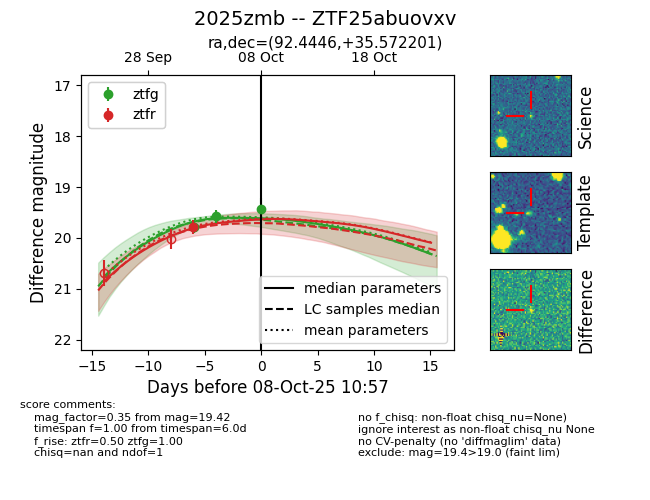
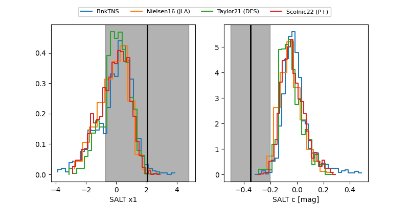

FINK: ZTF25abuovxv
Lasair: ZTF25abuovxv
ALeRCE: ZTF25abuovxv
TNS: 2025zmb
YSE: 2025zmb
ZTF25abuovxv (ztf,fink)
2025zmb (tns,yse)
equatorial (ra, dec) = (92.4446,+35.57220)
galactic (l, b) = (176.7655,+7.72367)


last ztfg=19.42, ztfr=19.79
3 ztfg, 1 ztfr detections